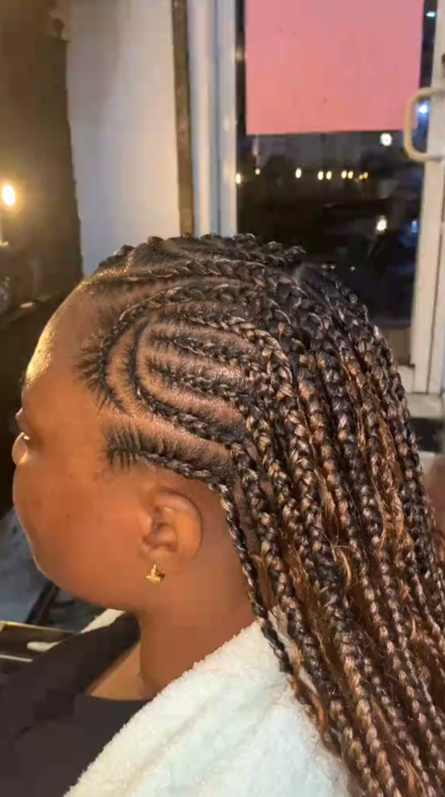

Beauty, Care & Confidence
At Emeldaz Unisex Salon & Spa, we offer professional hair, beauty, and spa services in a welcoming environment. From fresh cuts and stunning hairstyles to relaxing treatments and nail care, we're here to help you look and feel your best.